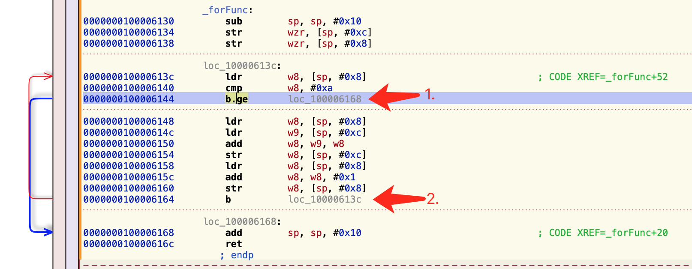

1. 状态寄存器
CPU内部的寄存器中,有一种特殊的寄存器(对于不同的处理器,个数和结构都可能不同)。这种寄存器在ARM中，被称为状态寄存器就是CPSR(current program status register)寄存器。
CPSR和其他寄存器不一样,其他寄存器是用来存放数据的，都是整个寄存器具有一个含义。而CPSR寄存器是按位起作用的，也就是说，它的每一位都有专门的含义，记录特定的信息。
CPSR寄存器是32位的。
- CPSR的低8位（包括I、F、T和M[4：0]）称为控制位，程序无法修改,除非CPU运行于特权模式下,程序才能修改控制位!
- N、Z、C、V均为条件码标志位。它们的内容可被算术或逻辑运算的结果所改变，并且可以决定某条指令是否被执行！

1.1 N （Negative）
cpsr的第31位是N，它记录相关指令执行后的结果，结果是负数，则N=1，非负数则N=0。
在ARM64的指令集中，逻辑运算或者算数运算（add、sub、or等）指令的执行会影响状态寄存器的值。
n=1：结果是负数
n=0：结果位非负数，包括0
1.2 Z（Zero）
cpsr的第30位是Z，0标志位。它记录相关指令执行后其结果是否为。如果结果为0，那么Z = 1；如果结果不为0，那么Z = 0.
z=1：结果为0
z=0：结果不为0
1.3 C（Carry）
cpsr第29位是c进位标志位，一般情况进行下无符号述的运算。
加法运算：当运算结果产生了进位时（无符号数溢出）c=1，没有溢出c=0
减法运算：包括（CPM）当运算时产生了借位（无符号数溢出），c=0，没有溢出c=1
1.3.1 进位
两个数据相加，比如正常的十进制运算，5+5=10，向十位数进1，个位数为0。但是超过其最大的位数时，发生溢出，导致进位的值无法保存，也就是说进位的值丢失了。但是CPU在运算的时候，并不会丢弃这个进位的值，二手放在寄存器里了，也就是cpsr的c位。
1.3.2 借位
两个数据做减法操作，有可能向更高位借位。比如：10-5=5，各位不够减，需要向十位去借。这时候会用c位来标记借位。
1.4 V（Overflow）
cpsr的第28位是V，溢出标志位。在进行有符号数运算的时候，如果超过了机器所能标识的范围，称为溢出。
- 正数 + 正数 = 负数。溢出
- 负数 + 负数 = 正数。溢出
- 正数 + 负数 不可能发生溢出
1.5 总结
NZ：是否为0，判断正负
CV：无符号，有符号判断是否溢出
2. 全局变量、常量
开始这一节之前，先知道我们的内存分区划分：
代码区：存放代码，可读，可执行
栈区：参数、局部变量、临时数据，可读可写
堆区：动态申请，可读可写
全局变量：可读可写
常量区：只读
接下来，我们分析代码：
1
2
3
4
5
6
7
8
9
10
11
12
13
14
15
16
17
18
| // 定义一个全局变量
int g = 12;
// 定义一个方法
int func(int a,int b){
// 'haha'就是一个常量，在常量区
printf("haha");
// 局部变量c
int c = a + g + b;
return c;
}
int main(int argc, char * argv[]) {
func(10, 20);
return UIApplicationMain(argc, argv, nil, NSStringFromClass([AppDelegate class]));
}
|
执行之后，走汇编流程，进行查看
1
2
3
4
5
6
7
8
9
10
11
12
13
14
15
16
17
18
19
20
21
22
23
24
| Demo`func:
-> 0x100bc211c <+0>: sub sp, sp, #0x20 ; =0x20
0x100bc2120 <+4>: stp x29, x30, [sp, #0x10]
0x100bc2124 <+8>: add x29, sp, #0x10 ; =0x10
0x100bc2128 <+12>: stur w0, [x29, #-0x4]
0x100bc212c <+16>: str w1, [sp, #0x8]
0x100bc2130 <+20>: adrp x0, 1
0x100bc2134 <+24>: add x0, x0, #0xf9f ; =0xf9f
// ① 这里执行了printf操作，大致可以判断，x0中存的就是'haha'
0x100bc2138 <+28>: bl 0x100bc25b0 ; symbol stub for: printf
0x100bc213c <+32>: ldur w8, [x29, #-0x4]
// ② 这里获取的是全局变量
0x100bc2140 <+36>: adrp x9, 3
0x100bc2144 <+40>: add x9, x9, #0x648 ; =0x648
0x100bc2148 <+44>: ldr w10, [x9]
0x100bc214c <+48>: add w8, w8, w10
0x100bc2150 <+52>: ldr w10, [sp, #0x8]
0x100bc2154 <+56>: add w8, w8, w10
0x100bc2158 <+60>: str w8, [sp, #0x4]
0x100bc215c <+64>: ldr w8, [sp, #0x4]
0x100bc2160 <+68>: mov x0, x8
0x100bc2164 <+72>: ldp x29, x30, [sp, #0x10]
0x100bc2168 <+76>: add sp, sp, #0x20 ; =0x20
0x100bc216c <+80>: ret
|
①这里执行了printf操作，这里看一些是否真的打印了’haha’。我们追一下x0寄存器的变化。
1
| 0x100bc2130 <+20>: adrp x0, 1
|
这里有一个关键字需要注意一下：
adrp: 针对address page操作
这一行代码有三个操作：
- 将1左移12位（即在1后加3个0变成1000）
- 将当前寄存器的地址的低12位清0，即当前行的地址的后3位清0。0x1002b2184 -> 0x100bc2130
- 把0x1000+0x100bc2000赋值给x0，x0=0x100bc3000，即当前行地址的倒数第4位与x0后面的数字相加
说白了，这句代码的意思就是找到某一页地址的开始。我们走断点，打印一下x0.
1
2
| (lldb) register read x0
x0 = 0x0000000100bc3000
|
下一句的代码是，add x0, x0, #0xf9f，就x0的地址+0x0xf9f
获取x0的值位0x100bc3f9f
1
2
3
4
5
6
| (lldb) register read x0
x0 = 0x0000000100bc3f9f "haha"
(lldb) x 0x0000000100bc3f9f
0x100bc3f9f: 68 61 68 61 00 01 00 00 00 1c 00 00 00 02 00 00 haha............
0x100bc3faf: 00 24 00 00 00 00 00 00 00 24 00 00 00 02 00 00 .$.......$......
|
我们知道’h’的ASCII码是97，对应的16进制就行0x61，’a’是0x68。就是我们的常量’haha’。
这样也就拿到了常量的值。
需要注意的是，我们的常量是在编译的时候就已经确定了地址。这里通过当前寄存器的地址为参照，偏移一定的值来获取常量所在的页数。
那继续看一下全局变量
1
2
| 0x100bc2140 <+36>: adrp x9, 3
0x100bc2144 <+40>: add x9, x9, #0x648 ; =0x648
|
我们使用相同的方式，打印一下x9的值。
1
2
3
4
5
6
7
8
9
10
| // adrp的断点
(lldb) register read x9
x9 = 0x0000000100bc5000
// add 的断点
lldb) register read x9
x9 = 0x0000000100bc5648 g // 这里拿到的是变量g，而g在内存中的值是0c
(lldb) x 0x0000000100bc5648
0x100bc5648: 0c 00 00 00 0c 00 00 00 38 5e 44 29 02 00 00 00 ........8^D)....
0x100bc5658: f0 33 bc 00 01 00 00 00 d0 4f bc 00 01 00 00 00 .3.......O......
|
我们可以通过相同的方式获取全局变量的值，g=12。
所以局部变量和全局变量都是通过adrp以当前寄存器的地址为参照来查找address来获取值的。
2.1 汇编还原高级语言
这里使用一个牛逼的工具Hopper，可以查看对应的方法转化成汇编之后的代码。
- build成功之后，在我们的工程里有一个’Products’文件，里头有对应的
xxx.app。
- 点击show in finder，找到对应的app，右键显示包内容。
- 找到与项目同名的黑乎乎的东西（可执行文件），直接拖到Hopper里头就可以了。
我们找到对应的方法func
1
2
3
4
5
6
7
8
9
10
11
12
13
14
15
16
17
18
19
20
21
22
23
24
25
26
27
28
29
30
31
32
33
34
35
36
37
| _func:
000000010000611c sub sp, sp, #0x20 ; CODE XREF=_main+32
0000000100006120 stp x29, x30, [sp, #0x10]
0000000100006124 add x29, sp, #0x10
// 这里我们可以知道有两个变量，w0、w1分别存起来
0000000100006128 stur w0, [x29, #-0x4]
000000010000612c str w1, [sp, #0x8]
// adrp操作，获取页数
0000000100006130 adrp x0, #0x100007000 ; argument #1 for method imp___stubs__printf
// 这里直接把结果给出来了。haha存放在x0
0000000100006134 add x0, x0, #0xf9f ; "haha"
// 执行printf
0000000100006138 bl imp___stubs__printf
// 取值，这个位置的值就是w0
000000010000613c ldur w8, [x29, #-0x4]
// adrp操作，根据页数获取值
0000000100006140 adrp x9, #0x100009000
// 获取变量_g。我们可以通过地址去找对应的值。可以在Hopper中找到对应的值
0000000100006144 add x9, x9, #0x648 ; _g
// 赋值w10 = _g
0000000100006148 ldr w10, x9
// 执行加法操作 w8 += w10
000000010000614c add w8, w8, w10
// 取值。也就是获取第二个参数的值w1
0000000100006150 ldr w10, [sp, #0x8]
// 执行加法操作 w8 += w10
0000000100006154 add w8, w8, w10
// 把w8的值存起来
0000000100006158 str w8, [sp, #0x4]
// 取值w8
000000010000615c ldr w8, [sp, #0x4]
// 把w8的值给x0（x0存放返回值）
0000000100006160 mov x0, x8
// 释放内存，return
0000000100006164 ldp x29, x30, [sp, #0x10]
0000000100006168 add sp, sp, #0x20
000000010000616c ret
|
汇编的代码逻辑已经直接表示出来了。最终可以得出一个函数的方法
1
2
3
4
| int func(int w1, int w2) {
printf("haha");
return w1 + _g + w2;
}
|
2. 条件判断
2.1 cmp（Compare）比较指令
cmp把一个寄存器的内容和另一个寄存器的内容（或立即数）进行比较。但不存储结果，只是更改标志。
一般cmp做完判断后会进行跳转，后面通常会跟上b指令。
cmp比较，其实是一个减法操作，但是不会改变两个比较的值。通过减法的结果去比较。
- BL 标号：跳转到标号处执行
- B.LT 标号：比价结果是小于（less than），执行标号，否则不跳转
- B.LE 标号：比较结果是小于等于（less than or qeual to），执行标号，否则不跳转
- B.GT 标号：比较结果是大于（greater than），执行标号，否则不跳转
- B.GE 标号：比较结果是大于等于（greater than or equal to），执行标号，否则不跳转
- B.EQ 标号：比较结果是等于(equal to)，执行标号，否则不跳转
- B.NE 标号：比较结果是不等于（not equal to），执行标号，否则不跳转
- B.LS 标号：比较结果是无符号小于等于，执行标号，否则不跳转
- B.LO 标号：比较结果是无符号小于，执行标号，否则不跳转
- B.HI 标号：比较结果是无符号大于，执行标号，否则不跳转
- B.HS 标号：比较结果是无符号大于等于，执行标号，否则不跳转
b.gt #0x10000f8d:这个地址是else的跳转地址
3. 循环
使用汇编的时候一定是在真机上运行。或者直接选中真机，直接Command+Bbuid之后，找到对应的可执行文件，直接放在Hopper里就行。
3.1 do-while
1
2
3
4
5
6
7
8
| void loopFunc() {
int nsum = 0;
int i = 0;
do {
nsum += 10;
i ++;
} while (i < 100);
}
|
看一下汇编下是什么代码逻辑：
1
2
3
4
5
6
7
8
9
10
11
12
13
14
15
16
17
18
19
20
21
22
23
24
| FunctionDemo`loopFunc:
-> 0x102c2a764 <+0>: sub sp, sp, #0x10 ; =0x10
// 这里是把0放在sp+0xc里头，w：低32位，zr==zero
0x102c2a768 <+4>: str wzr, [sp, #0xc] // 假设#0xc存的是a
0x102c2a76c <+8>: str wzr, [sp, #0x8] // 假设#0x8存的是b,之后用的都是w8，会比较乱
// ① 读取a的值
0x102c2a770 <+12>: ldr w8, [sp, #0xc]
// 执行a += 10的操作。
0x102c2a774 <+16>: add w8, w8, #0xa ; =0x1
// 然后把a的值存起来。
0x102c2a778 <+20>: str w8, [sp, #0xc]
// 取值b
0x102c2a77c <+24>: ldr w8, [sp, #0x8]
// b += 1
0x102c2a780 <+28>: add w8, w8, #0x1 ; =0x1
// 把b存起来
0x102c2a784 <+32>: str w8, [sp, #0x8]
0x102c2a788 <+36>: ldr w8, [sp, #0x8]
// 比较b的值，b与100比较
0x102c2a78c <+40>: cmp w8, #0x64 ; =0x64
// 如果 lt（小于）if b < 100 跳转到0x102c2a770继续执行。执行①
0x102c2a790 <+44>: b.lt 0x102c2a770 ; <+12> at main.m:22:14
0x102c2a794 <+48>: add sp, sp, #0x10 ; =0x10
0x102c2a798 <+52>: ret
|
我们直接使用Hopper工具查看汇编，其实比在Xcode中更方便。
3.2 while
1
2
3
4
5
6
7
8
| void whileFunc() {
int i = 0;
int nsum = 0;
while (i < 10) {
nsum += 10;
i += 1;
}
}
|
我们在Hopper里查看源码：
①处是一个比较，判断w8的值和10的大小，如果b.ge则执行loc_100006128的代码。b.ge是大于等于。
②是直接跳转到loc_10000610c的代码。
3.3 for
1
2
3
4
5
6
| void forFunc() {
int nsum = 0;
for (int i = 0; i < 10; i ++) {
nsum += i;
}
}
|
我们在Hopper里查看源码：

for循环与while循环区别不大。
4. switch
4.1 三个case的switch
1
2
3
4
5
6
7
8
9
10
11
12
13
14
15
16
17
| void switchFunc(int a) {
int nsum = 0;
switch (a) {
case 1:
printf("1");
break;
case 2:
printf("2");
break;
case 3:
printf("3");
break;
default:
printf("default");
break;
}
}
|
还是运行xCode，查看汇编源码：
1
2
3
4
5
6
7
8
9
10
11
12
13
14
15
16
17
18
19
20
21
22
23
24
25
26
27
28
29
30
31
32
33
34
| Demo`switchFunc:
-> 0x100bea0e8 <+0>: sub sp, sp, #0x10 ; =0x10
0x100bea0ec <+4>: str w0, [sp, #0xc]
0x100bea0f0 <+8>: str wzr, [sp, #0x8]
0x100bea0f4 <+12>: ldr w8, [sp, #0xc]
0x100bea0f8 <+16>: cmp w8, #0x1 ; =0x1
0x100bea0fc <+20>: str w8, [sp, #0x4]
0x100bea100 <+24>: b.eq 0x100bea128 ; <+64> at main.m:48:18
0x100bea104 <+28>: b 0x100bea108 ; <+32> at main.m
0x100bea108 <+32>: ldr w8, [sp, #0x4]
0x100bea10c <+36>: cmp w8, #0x2 ; =0x2
0x100bea110 <+40>: b.eq 0x100bea138 ; <+80> at main.m:51:18
0x100bea114 <+44>: b 0x100bea118 ; <+48> at main.m
0x100bea118 <+48>: ldr w8, [sp, #0x4]
0x100bea11c <+52>: cmp w8, #0x3 ; =0x3
0x100bea120 <+56>: b.eq 0x100bea148 ; <+96> at main.m:54:18
0x100bea124 <+60>: b 0x100bea158 ; <+112> at main.m:60:18
0x100bea128 <+64>: ldr w8, [sp, #0x8]
0x100bea12c <+68>: add w8, w8, #0x1 ; =0x1
0x100bea130 <+72>: str w8, [sp, #0x8]
0x100bea134 <+76>: b 0x100bea164 ; <+124> at main.m:63:1
0x100bea138 <+80>: ldr w8, [sp, #0x8]
0x100bea13c <+84>: add w8, w8, #0xa ; =0xa
0x100bea140 <+88>: str w8, [sp, #0x8]
0x100bea144 <+92>: b 0x100bea164 ; <+124> at main.m:63:1
0x100bea148 <+96>: ldr w8, [sp, #0x8]
0x100bea14c <+100>: add w8, w8, #0x14 ; =0x14
0x100bea150 <+104>: str w8, [sp, #0x8]
0x100bea154 <+108>: b 0x100bea164 ; <+124> at main.m:63:1
0x100bea158 <+112>: ldr w8, [sp, #0x8]
0x100bea15c <+116>: subs w8, w8, #0x1 ; =0x1
0x100bea160 <+120>: str w8, [sp, #0x8]
0x100bea164 <+124>: add sp, sp, #0x10 ; =0x10
0x100bea168 <+128>: ret
|
看汇编源码，其实就是简单的if-else比较，只不过这里换成了b.eq(等于)，然后跳转到对应的代码块。
4.2 4个case的switch
1
2
3
4
5
6
7
8
9
10
11
12
13
14
15
16
17
18
19
20
21
22
23
24
| void switchFunc(int a) {
int nsum = 0;
switch (a) {
case 1:
printf("1");
break;
case 2:
printf("2");
break;
case 3:
printf("3");
break;
case 4:
printf("4");
break;
default:
printf("default");
break;
}
}
int main(int argc, char * argv[]) {
switchFunc(4);
}
|
我们改变一下代码，再加一个case，运行一下：
1
2
3
4
5
6
7
8
9
10
11
12
13
14
15
16
17
18
19
20
21
22
23
24
25
26
27
28
29
30
31
32
33
34
35
36
37
38
39
40
41
42
43
44
45
46
47
48
49
50
51
52
53
54
55
56
57
58
59
60
61
62
63
64
65
| Demo`switchFunc:
0x1005460ac <+0>: sub sp, sp, #0x20 ; =0x20
0x1005460b0 <+4>: stp x29, x30, [sp, #0x10]
0x1005460b4 <+8>: add x29, sp, #0x10 ; =0x10
// 1. 把w0的值存起来，w0 = 4
0x1005460b8 <+12>: stur w0, [x29, #-0x4]
// 2. 把0存起来
0x1005460bc <+16>: str wzr, [sp, #0x8]
// 3. 取值w8 = 4
0x1005460c0 <+20>: ldur w8, [x29, #-0x4]
// 4. 这里是第一个case 1. w8 = w8 - 1 = 3
0x1005460c4 <+24>: subs w8, w8, #0x1 ; =0x1
// 5. 把x8的值给x9，x9 = 0x0000000000000003
0x1005460c8 <+28>: mov x9, x8
// 6. 这个ubfx语法，往下翻有详细解释。把x9的高32位清零，x9 = 0x0000000000000003
0x1005460cc <+32>: ubfx x9, x9, #0, #32
// 7. x9的值和3进行比较
0x1005460d0 <+36>: cmp x9, #0x3 ; =0x3
// 8. 把x9的值放在sp对应的内存地址中
0x1005460d4 <+40>: str x9, [sp]
// 9. 如果7中比较的结果是一个【无符号大于】，则执行0x100546134，其实就是执行了default操作
-> 0x1005460d8 <+44>: b.hi 0x100546134 ; <+136> at main.m
// 10. adrp:地址操作，x8=0x100546000，左边的地址标号后12位清零，然后加上0x0000
0x1005460dc <+48>: adrp x8, 0
// 11. x8 = 0x10054614c，然后通过view memory，看里头的值。
0x1005460e0 <+52>: add x8, x8, #0x14c ; =0x14c
// 12. 取值x11 = 3
0x1005460e4 <+56>: ldr x11, [sp]
// 13. ldrsw：取值，先计算中括号内部x11, lsl #2:意思是x11左移2位，
// 然后加上x8获取一个地址，把地址里的值给x10
// 3<<2 = 二进制数3：11<<2 = 1100，也就是十进制12，
// x8+12 = 0x10054614c+0xc = 0x100546158
// 这是一个寻址操作，把0x100546158地址的值给x10，
// 通过view memory查看x10 = 0xffffffd8 = -40,是一个负值
0x1005460e8 <+60>: ldrsw x10, [x8, x11, lsl #2]
// x9 = 0x10054614c + (-40) = 0x100546124
0x1005460ec <+64>: add x9, x8, x10
// 执行跳转到 0x100546124
0x1005460f0 <+68>: br x9
// 从这里开始就是case的位置了。
0x1005460f4 <+72>: adrp x0, 1
0x1005460f8 <+76>: add x0, x0, #0xf8c ; =0xf8c
0x1005460fc <+80>: bl 0x100546598 ; symbol stub for: printf
0x100546100 <+84>: b 0x100546140 ; <+148> at main.m:63:1
0x100546104 <+88>: adrp x0, 1
0x100546108 <+92>: add x0, x0, #0xf8e ; =0xf8e
0x10054610c <+96>: bl 0x100546598 ; symbol stub for: printf
0x100546110 <+100>: b 0x100546140 ; <+148> at main.m:63:1
0x100546114 <+104>: adrp x0, 1
0x100546118 <+108>: add x0, x0, #0xf90 ; =0xf90
0x10054611c <+112>: bl 0x100546598 ; symbol stub for: printf
0x100546120 <+116>: b 0x100546140 ; <+148> at main.m:63:1
// 直接跳转到这里，执行adrp操作，获取x0
0x100546124 <+120>: adrp x0, 1
0x100546128 <+124>: add x0, x0, #0xf92 ; =0xf92
// 执行printf操作。
0x10054612c <+128>: bl 0x100546598 ; symbol stub for: printf
0x100546130 <+132>: b 0x100546140 ; <+148> at main.m:63:1
0x100546134 <+136>: adrp x0, 1
0x100546138 <+140>: add x0, x0, #0xf94 ; =0xf94
0x10054613c <+144>: bl 0x100546598 ; symbol stub for: printf
0x100546140 <+148>: ldp x29, x30, [sp, #0x10]
0x100546144 <+152>: add sp, sp, #0x20 ; =0x20
0x100546148 <+156>: ret
|
发现不一样了啊，不是if-else判断了。
0x10092e0e0 <+24>: ubfx x9, x9, #0, #32
x9寄存器是64位，w8是32位，相当于x9的低32位。
这里的目的就是x9从0位开始到32位清零，也就x9的高32位清零然后赋值给x9
b.hi 无符号大于
br x9：b是跳转，br是不影响lr寄存器的跳转。直接跳到x9（x9是一个地址标号）
ldrsw x10, [x8, x11, lsl #2]： 这里先计算中括号内部。而在中括号内部先计算x11。
- lsl表示左移，
x11, lsl #2表示x11左移2位。
- 加上x8的值。生成一个新的地址。
- []表示寻址，也就是说把生成的地址中的值给x10。
看一下我们获取参数是否正确。看一下view memory
偏移表中为什么存储的是地址的偏移量？为什么不直接存对应的地址？
是因为地址只有在运行的时候才会开辟的，每次运行的值都不一样，所以直接存偏移量，然后通过偏移表的起始位置进行计算就可以直接定位了。
4.2.1 switch case 偏移表
我们看第11. x8 = 0x10054614c，这个地址正好是当前汇编函数的末尾0x100546148+0x4。所以，这个函数栈空间后有一堆数据，存放一些值，这一堆数据就是case创建的偏移表。而这些值就是我们要偏移的值。
偏移表中的个数是由 (case的最大值 - case的最小值) + 1。看一下上面的图0x10054614c的位置存放的4个值，分别是0xffffffa8=-88, 0xffffffb8=-72, 0xffffffc8=-56, 0xffffffd8=-40
偏移值是一个负数，是因为是以x8 = 0x10054614c寄存器中存的地址为基数，偏移一个负数得到一个地址，这个地址就是在函数开辟的栈空间内。
我们通过一张图重新看一下这个过程：
4.3 4个不连续case的switch
我们知道了，3个连续的case是if-else比较，4个连续的case就不是if-else了，而是会生成一个表。那么4个不连续的case呢？
1
2
3
4
5
6
7
8
9
10
11
12
13
14
15
16
17
18
19
20
| void switchFunc(int a) {
int nsum = 0;
switch (a) {
case 1:
printf("1");
break;
case 200:
printf("2");
break;
case 30:
printf("3");
break;
case 4:
printf("4");
break;
default:
printf("default");
break;
}
}
|
这里就不在放汇编源码了，4个不连续的case，与3个case一样，也是通过if-else比较来执行代码块的。
总结
- 假设switch语句的分支比较少的时候（例如3，少于4的时候没有意义）没有必要使用此结构，相当于if。
- 各个case分支常量的差值较大的时候，编译器会在效率还是内存进行取舍，这个时候编译器还是会编译成类似于if，else的结构。
- 在分支比较多的时候：在编译的时候会生成一个表（跳转表每个地址四个字节）